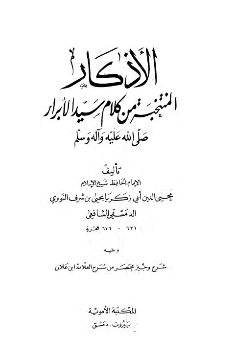

Downloads need an internet connection.
الأذكار المنتخبة من كلام سيد الأبرارﷺ وعليه شرح وجيز من ابن علان
Authors: يحيى بن شرف النووي
Publishers: المكتبة الأموية
▫️ العنوان: الأذكار المنتخبة من كلام سيد الأبرارﷺ وعليه شرح وجيز من ابن علان ▪️ المؤلف: #يحيى_بن_شرف_النووي ▫️ الناشر: #المكتبة_الأموية ▪️ بلد النشر: دمشق، #سورية • بيروت، #لبنان ▫️ الطبعة: 1 ▪️ عدد الأجزاء: 1 ▫️ الصفحات: 376 ▪️ نوع الوعاء: #كتاب ▫️ التصنيف الرئيسي: #الزهد_والرقائق ۪